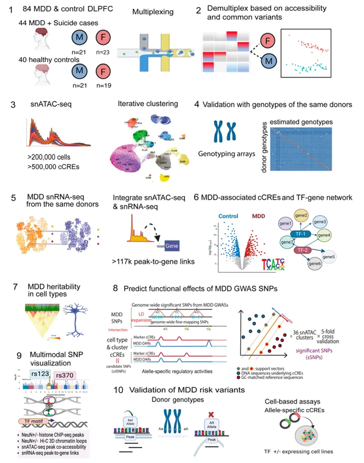
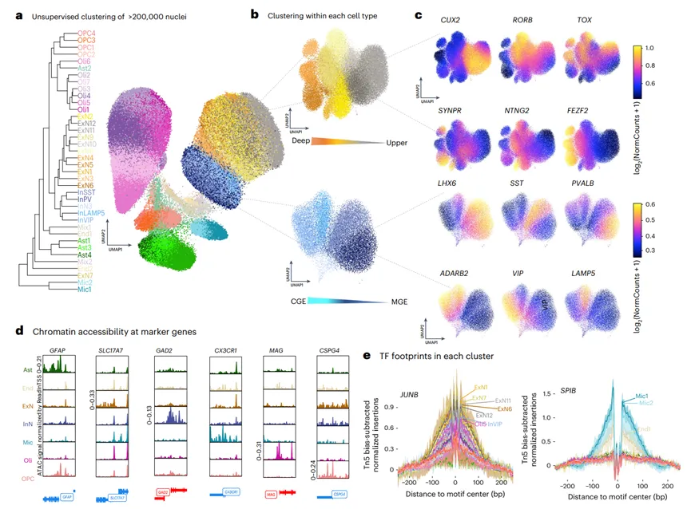
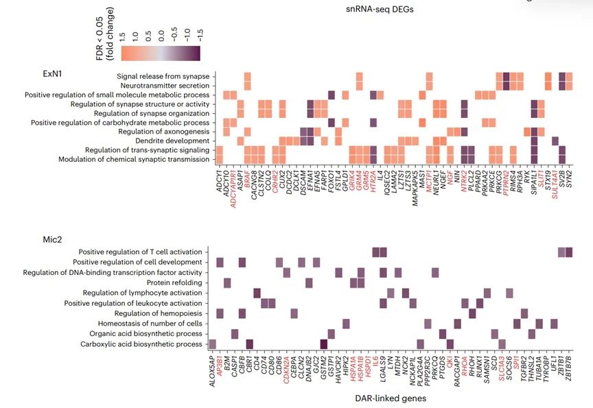
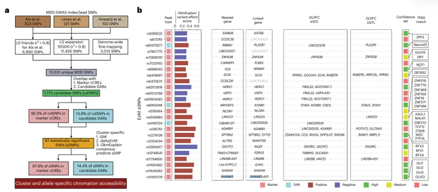
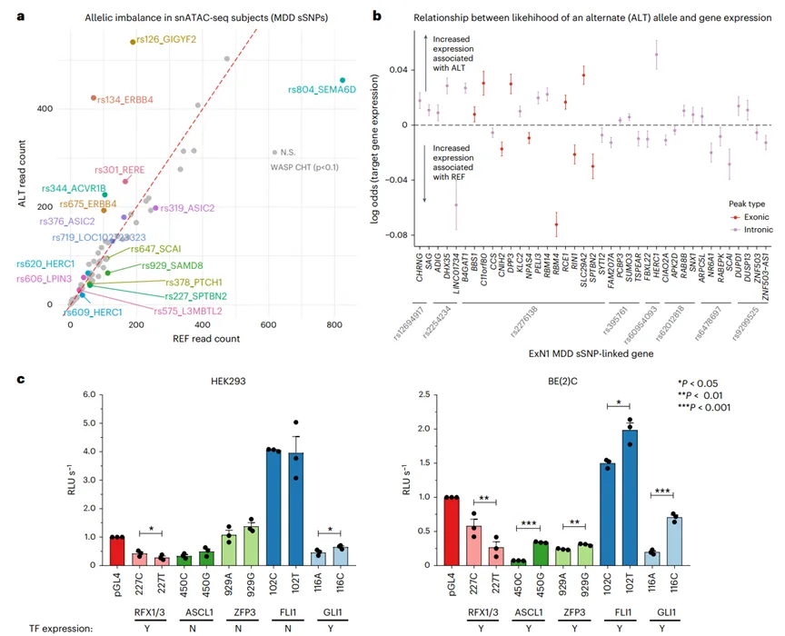

《Nature Genetics》 snATAC图谱鉴定重度抑郁症细胞类型+功能变异
原文：https://mp.weixin.qq.com/s?__biz=MzAwMzIzOTk5OQ==&mid=2247540922&idx=1&sn=53b73bf2d3503683a4f85cde37677c14&chksm=9b3c59eaac4bd0fcb93e6f562f1ef1d374b3cd5266daf0f97be12927c630c83964315524b2fa#rd 合集：文献速递
一、写在前面
本次分享聚焦2025年发表于《Nature Genetics》（DOI：10.1038/s41588-025-02249-4）的重磅研究，该研究由多国团队联合完成，针对抑郁症（MDD）的遗传调控谜题展开探索。
抑郁症作为影响全球近5%人口的致残性精神疾病，其发病机制长期是医学研究的难点。全基因组关联研究(GWAS）已发现200多个MDD 风险位点，但 90%以上位于非编码区，无法直接解析功能；早期生活压力等环境因素虽被证实可通过染色质可及性影响基因表达，却不知具体作用的细胞类型和转录因子（TF）通路。此前研究多依赖bulk 测序，难以区分细胞类型特异性调控异常，而背外侧前额叶皮层（DLPFC）作为调控高级认知与情绪的核心脑区，是解析 MDD 机制的关键部位。正是基于这些研究缺口，该团队首次通过单细胞染色质可及性测序（snATAC-seq）结合单细胞基因表达测序（snRNA-seq），在单细胞分辨率下揭示了MDD 的细胞特异性调控网络，为破解抑郁症遗传调控难题提供了全新视角。

scATAC最新教程可见：

如果需要单细胞数据分析教学、生信热点全文复现、自测数据个性化分析辅导、实验科研服务和常态化实验学习，欢迎联系客服微信[Biomamba_zhushou]。
二、主要内容
一：深层兴奋性神经元（ExN1）：遗传驱动的突触调控失衡
ExN1是MDD中染色质可及性变化最显著的细胞类型（FDR<0.05，|logFC|>log2(1.1)），其异常机制可概括为“TF通路异常-遗传变异富集-突触功能受损”的连锁反应。 从关键TF通路来看，应激响应转录因子NR4A2（别名Nurr1）的motif可及性与结合活性显著降低，而NR4A2作为调控多巴胺合成与神经元活性的核心分子，其功能异常直接影响神经信号传递。遗传层面，ExN1的标记性cCREs中富集MDD风险变异（如rs2276138），这些变异会破坏RFX、FOS等TF的结合位点。受影响的靶基因集中于“突触通讯”通路，包括神经递质释放、突触组织调控、AMPA受体表达等，提示ExN1功能异常会直接削弱突触效率。通过荧光素酶报告基因实验验证，rs2276138变异可通过干扰RFX1结合，使突触蛋白基因ZDHHC24表达降低40%，进一步证实了遗传变异的功能性影响。
二：灰质小胶质细胞（Mic2）：继发于损伤的免疫稳态失衡
与ExN1不同，Mic2的异常更倾向于“适应性反应”而非直接遗传驱动。Mic2中维持免疫稳态的TF（如PU.1、IRF1、FLI1）结合位点可及性显著降低，且该细胞簇与此前报道的“抑郁症相关小胶质细胞（depDAM）”高度重合，其差异表达基因（如ARL4C、TOB2）均指向免疫功能抑制。功能上，FLI1结合位点可及性降低导致小胶质细胞吞噬能力下降35%，炎症反应减弱，这与慢性压力诱导的抑郁样行为直接相关。值得注意的是，Mic2不富集MDD风险变异，提示其异常可能是“继发于神经元损伤”的适应性反应，为理解抑郁症中神经-免疫交互作用提供了新线索。
三：通过整合GWAS数据与单细胞调控图谱，研究明确了MDD风险变异的功能定位。
在97个显著风险变异（sSNPs）中，14.4%位于ExN1的标记性cCREs，且89%是DLPFC的eQTL/sQTL（影响基因表达或可变剪接）；ExN1的cCREs对MDD遗传力的富集程度最高（P=0.0005），是遗传风险的核心“载体细胞”。在杂合子供体中，MDD-risk等位基因（如rs10210757-C）使ExN1的cCRE可及性降低28%，直接验证了其调控效应，这也印证了非编码风险变异需结合具体细胞类型的调控背景才能明确其致病作用。




三、研究意义与未来展望
科学层面，该研究首次建立了MDD的“细胞-遗传-调控”三维模型，明确ExN1（遗传驱动突触异常）与Mic2（免疫稳态失衡）的协同致病作用，将GWAS发现的非编码位点定位到具体细胞类型的cCREs，填补了“遗传-表型”的研究缺口。临床转化方面，研究为抑郁症的治疗提供了潜在靶点：神经元层面可靶向NR4A2通路（如开发激活剂修复突触功能），小胶质细胞层面可调控PU.1/IRF通路（如恢复免疫吞噬能力）；同时，ExN1的NR4A2可及性与Mic2的FLI1结合位点可及性，或成为MDD的表观遗传诊断标志物，为精准诊断提供新方向。
尽管研究取得重大进展，但仍有问题亟待解决。首先需在更多种族、更大样本（万例级）中验证ExN1和Mic2异常的普遍性，明确不同突变类型的表型差异；其次，现有研究集中于DLPFC，需探索其他脑区（如海马体、杏仁核）的细胞调控异常，完善抑郁症的脑区特异性机制；最后，抑郁症常涉及多基因、多通路异常，未来需探索“ExN1-Mic2调控轴”与其他致病通路的交叉作用，开发联合治疗方案，提升疗效。
首次构建MDD的多模态单细胞染色质图谱，揭示特定细胞类型在应激响应中的作用，并通过多方法验证遗传变异的调控影响，为抑郁症机制提供新见解；局限性在于样本主要为欧洲祖先，可能不适用于其他人群；样本大小和单核数据稀疏性可能限制下游解释。
该研究以单细胞多组学技术为核心，从临床问题出发，揭示了抑郁症中关键细胞类型的调控异常机制，不仅为抑郁症的基础研究提供了全新范式，也为临床转化奠定了基础。

如何联系我们

 留一个领取资料、免费两周学习版服务器的微信号[Biomamba_zhushou]，方便各位随时交流。同时我们也构建了交流群矩阵，欢迎大家入群讨论。
大家可以阅读完这几篇之后添加给生信入门初学者的小贴士如何搜索公众号过往发布内容
留一个领取资料、免费两周学习版服务器的微信号[Biomamba_zhushou]，方便各位随时交流。同时我们也构建了交流群矩阵，欢迎大家入群讨论。
大家可以阅读完这几篇之后添加给生信入门初学者的小贴士如何搜索公众号过往发布内容
已有生信基地联系方式的同学无需重复添加

 您点的每个赞和在看，我都认真当成了喜欢
您点的每个赞和在看，我都认真当成了喜欢